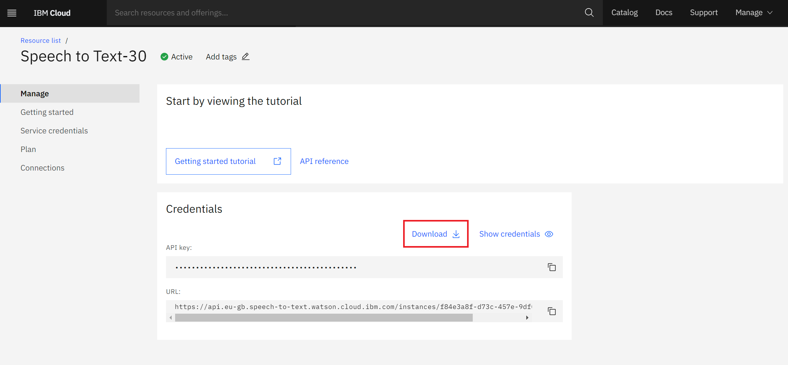
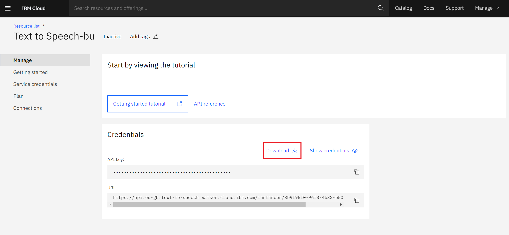
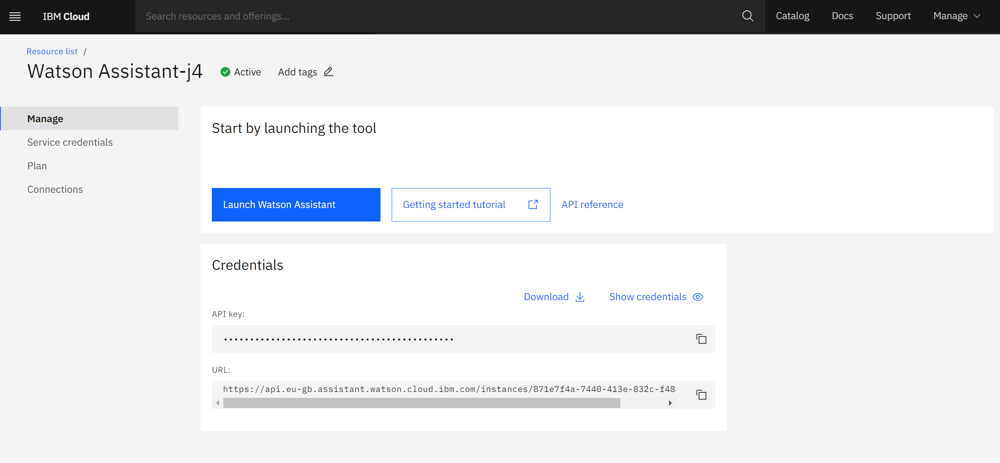
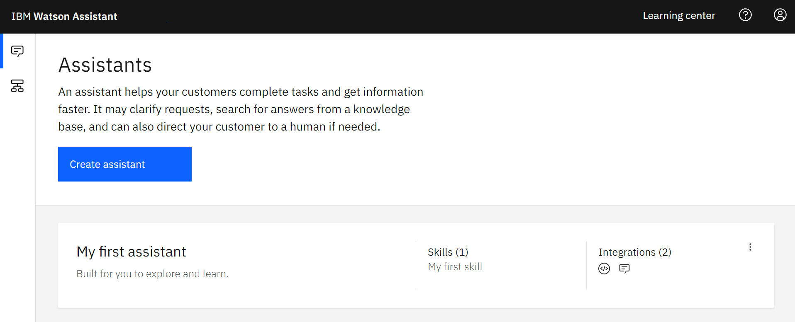
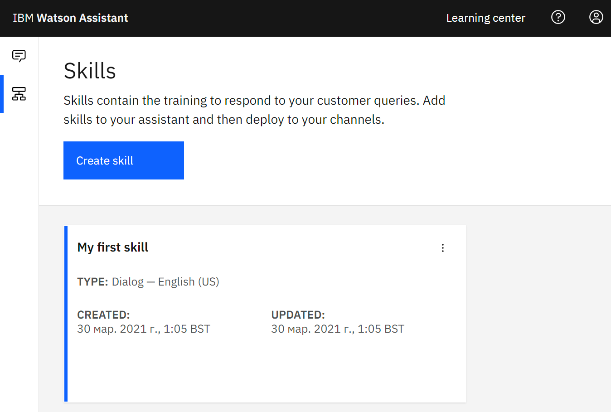
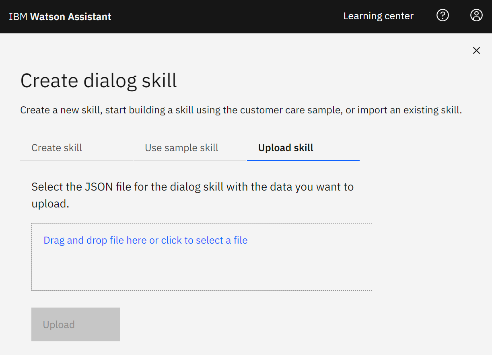
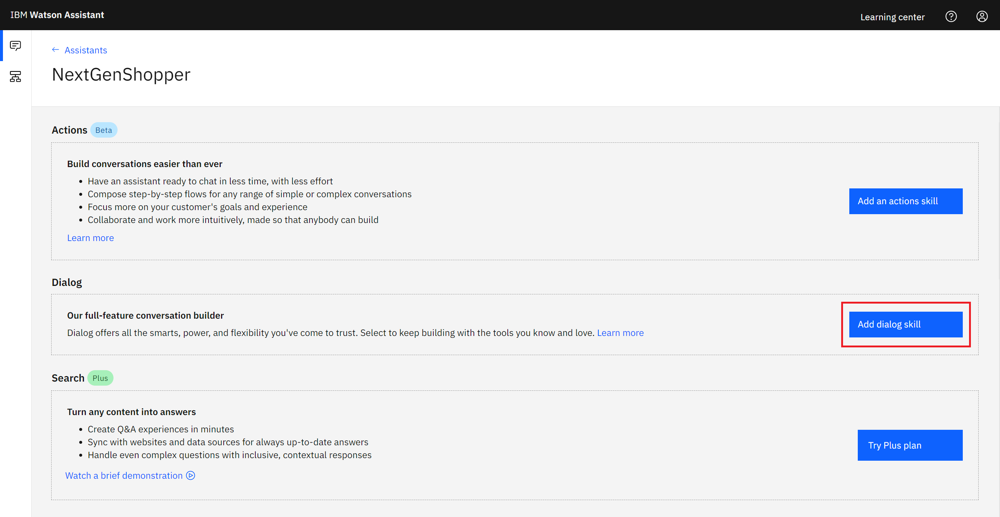
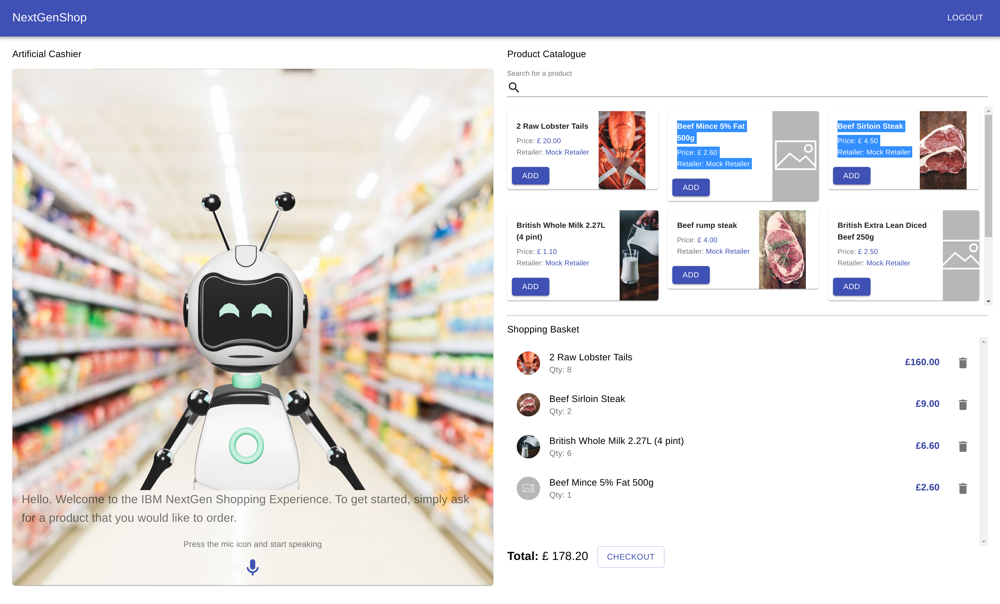
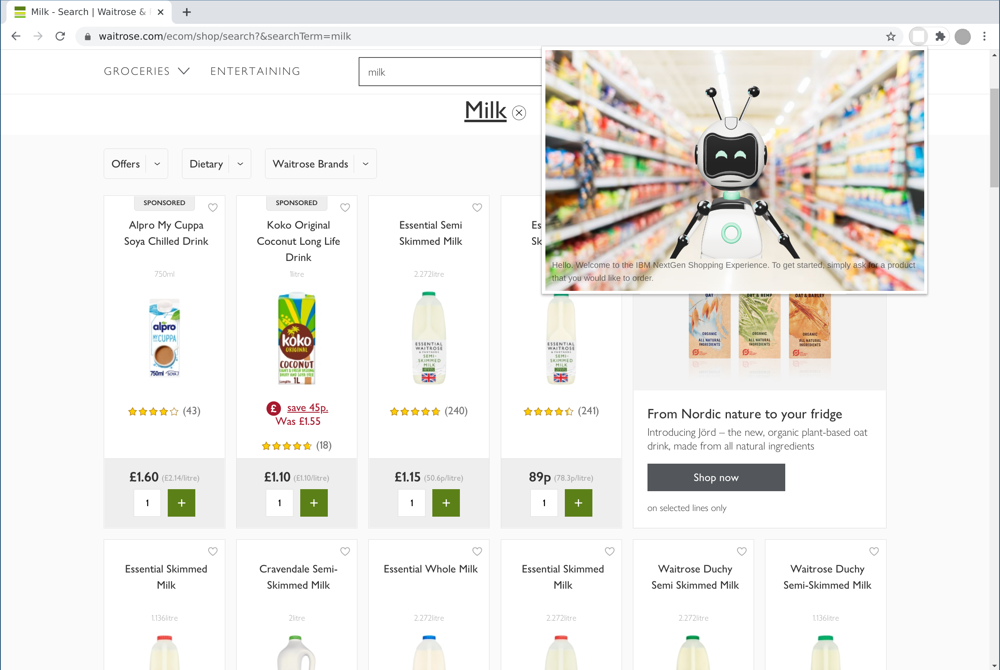
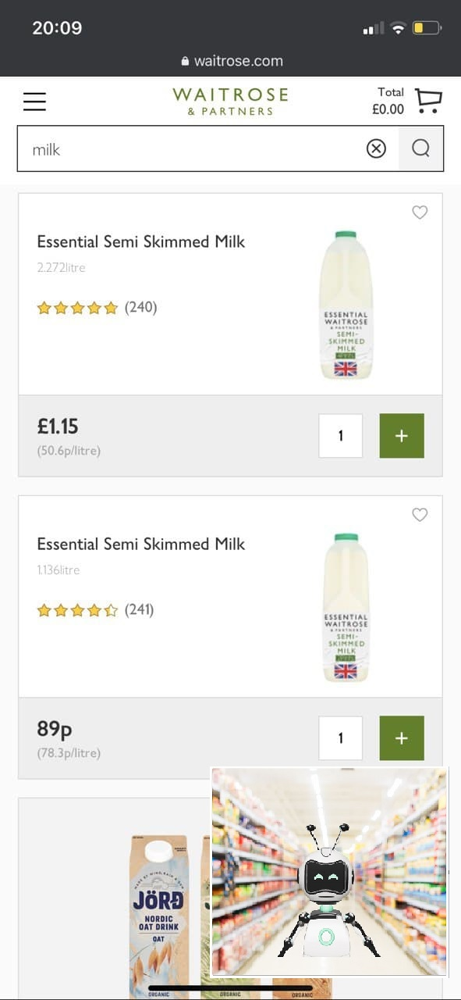

NextGenShop is a system that allows users to shop online by interacting with a virtual assistant. It aims to replicate a real cashier that is able to understand speech input, generate appropriate responses and perform actions based on user's intent. The complete sourcecode for the project is available in our GitHub repositories.
This documentation is here to help you deploy, integrate and customize the system for your particular needs. Please go through the documentation carefully to understand how the system is built and how to configure it properly.
Deployment scripts used in the project were written and tested for Debian based Linux operating systems. It is not guaranteed that this guide will smoothly transition on to other platforms. Aditionally, to run the system, you will need the following:
Navigate to IBM Cloud Speech to Text service and create an instance that is suitable for your needs. Find the newly created instance in your resources and click on it to navigate to the management page. There, you can find your auto-generated service credentials. Download and save them in a private place. These will later be referred to as the Speech to Text token.
 Do not expose your Speech to Text
token, since doing so will allow other people to use the service at your
expense.
If needed, the token can be withdrawn and recreated in the Service
credentials tab.
Navigate to IBM Cloud Text to Speech service and create an instance that is suitable for your needs. Find the newly created instance in your resources and click on it to navigate to the management page. There, you can find your auto-generated service credentials. Download and save them in a private place. These will later be referred to as the Text to Speech token.
 Do not expose your Text to Speech
token, since doing so will allow
other people to use the service at your expense.
If needed, the token can be withdrawn and recreated in the Service
credentials tab.
Navigate to IBM Cloud Watson Assistant service and create an instance that is suitable for your needs. Find the newly created instance in your resources and click on it to navigate to the management page. There, you can find your auto-generated service credentials. Download and save them. These will later be referred to as the Watson Assistant token.
To create a new assistant, press 'Launch Watson Assistant' and navigate to your Assistents page.
Press 'Create assistant', and give it an appropriate name (eg: NextGenShopper), then click 'Create assistant' to finish.
For complete instructions and more information, see Getting started with Watson Assistant guide.
Conversational AI component is responsible for interpreting user queries and generating appropriate responses. A basic dialogue tree for this component has been provided, allowing the core of the Conversational AI to be set up with minimal effort. Once imported this can be customised as necessary, including the implementation of additional dialogues and modifications of existing responses.
Download the pre-made dialogue tree which will act as the core for the conversational AI here, or find it in our front-end repository. Launch the assistannt service created in the previous step anc click the 'Skills' tab on the left of the window.
Click 'Create skill' and select the 'Dialogue skill' option (it is important to select the correct type of skill here, otherwise the import will not work as intended). Select 'Upload skill tab' and upload the ''skill-Shopping-Assistant.json' file downloaded earlier.
Make sure to 'Import everything' when prompted to specify (this will make sure the custom intents as well as conversation flows are imported), then click 'Import' to finish.
For complete instructions and more information, see Adding a dialog skill guide.
To link the dialogue tree to the assistant created earlier, launch the assistant created in the first step (a named instance of the assistant, rather than just the service itself), and click 'Add dialog skill'.
Select the dialogue skill that imported in the previous step and confirm.
The dialogue skill can be modified as necessary, allowing for customised repsonses or additional conversational flows to be added. For more information on how to do this see the IBM Watson Assistant documentation.
The Back-end service provides a RESTful API that allows the Front-end application and IBM Watson Assistant to make requests for certain resources including the product catalogue and shopping basket data. It an be found in our GitHub repository.
Before running the back-end service, create a .env file in your Backend_Django/isolated_shopping/ folder, and configure it as per example below.
DEBUG=
SECRET_KEY=
SPEECH_TO_TEXT_URL=
SPEECH_TO_TEXT_IAM_APIKEY=
TEXT_TO_SPEECH_URL=
TEXT_TO_SPEECH_IAM_APIKEY=
ASSISTANT_URL=
ASSISTANT_IAM_APIKEY=
Optionally, set NEXTGENSHOP_BACKEND_PORT environment variable to configure the transport layer port at which your API will run (80 is set by default).
export NEXTGENSHOP_BACKEND_PORT=80
Backend_Django/isolated_shopping/MockSupermarketDataset.json contains a mock product catalogue. Edit this before running the service to fill the API with your own products. An example of the dataset file is shown below:
{
{
"model": "product.ProductDB",
"pk": 1,
"fields": {
"name": "Large Eggs",
"price": 3.5,
"image": "mockImageUrl",
"retailer": "Mock Retailer",
"stock": 100
}
},
{
"model": "product.ProductDB",
"pk": 2,
"fields": {
"name": "Beef rump steak",
"price": 4,
"image": "https://images.com/photo-156078",
"retailer": "Mock Retailer",
"stock": 100
}
}
}
GNU Make and Docker are used to pack the service. Assuming you have them installed, and have configured the environment variables, you can run the system on your machine with the following command.
make run
In case you need to install GNU Make and/or Docker, take a look at the Requirements section, or use the script from our GitHub repository.
For a detailed description of the datapoints made availale via our back-end service, take a look at our OpenAPI specification.
The Front-end service is responsible displaying the artificial cashier component and handling user interactions. It communicates with the back-end service via HTTP to call the product and basket API. The source code can be found in our GitHub repository.
To allow for a more flexible configuration, three different deployment approaches are offered.
The standalone deployment functions as a self-sufficient web application that includes the complete functionality required for exploring available products and placing orders. It provides maximum flexibility in configuring the user experience and data ownership. Since it implies that the system exists in parallel and independently of the existing retail platforms, this is the recommended approach in cases where the client decides not to tailor the system for one single retailer.
Before running the front-end service, configure your back-end API endpints in nextgenshop-frontend/src/config/index.js as per example below.
const prod = {
API_URL: "https://your-api-endpoint.com",
};
const dev = {
API_URL: "https://your-api-endpoint.com",
};
Optionally, set NEXTGENSHOP_FRONTEND_PORT environment variable to configure the transport layer port at which your app will run (80 is set by default).
export NEXTGENSHOP_BACKEND_PORT=80
Then, deploy the front-end service on your local machine by running:
make start
Alternatively, the project can be compiled by running:
make build
empty
empty
empty
empty